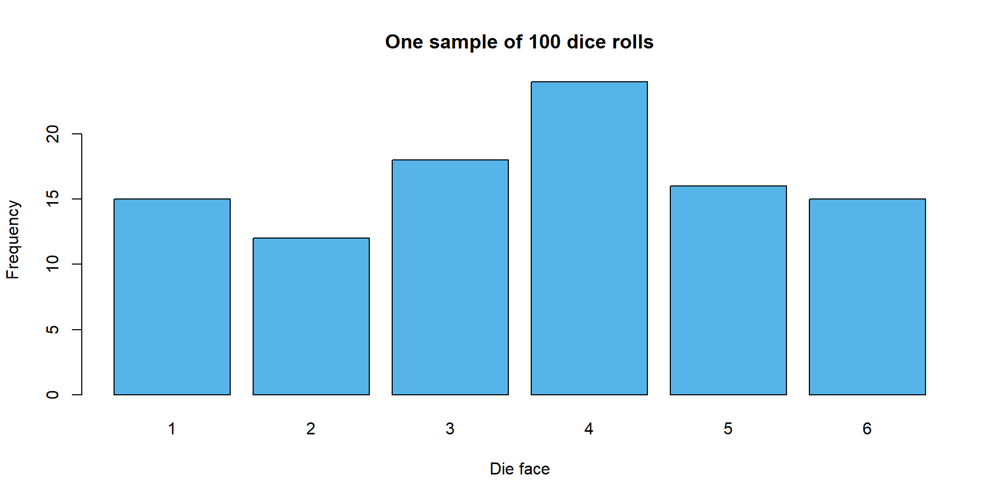
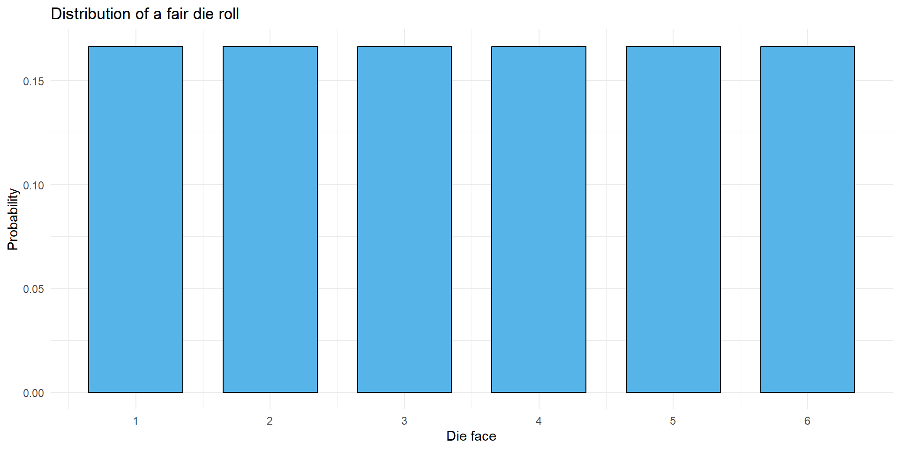
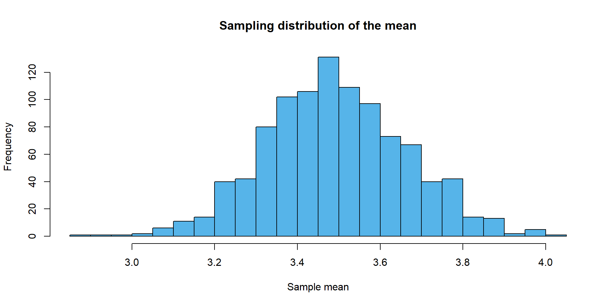
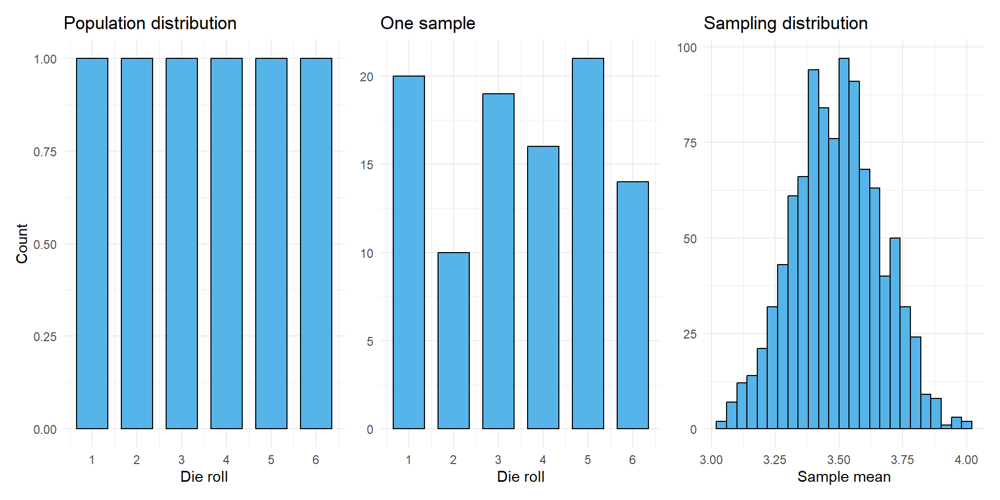
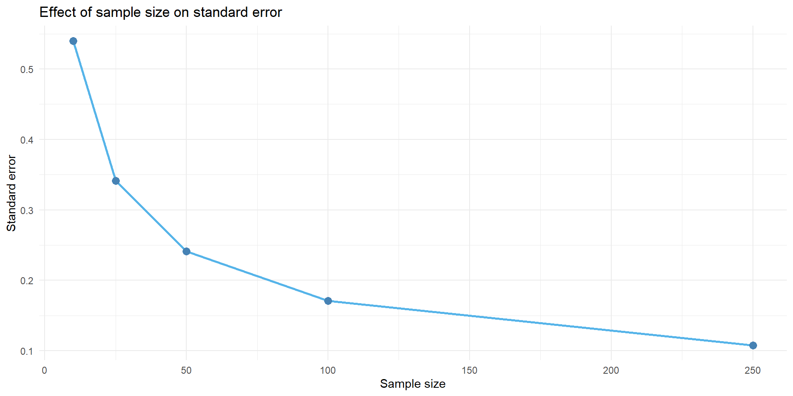
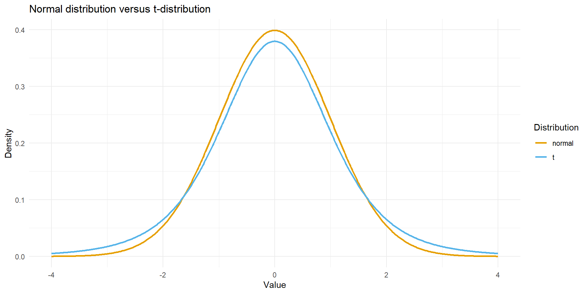
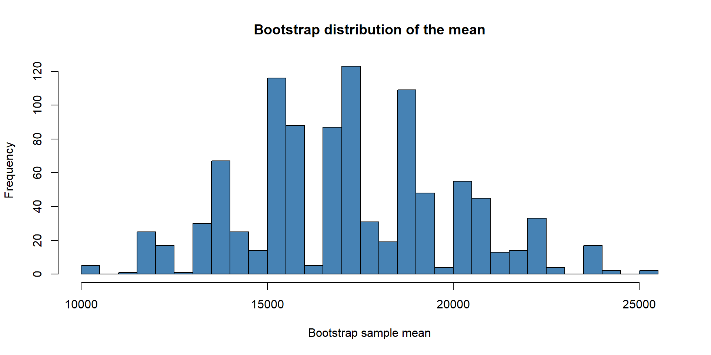

ST201 - Data analysis
Suppose we want to understand the average value of a variable in a population.
For example:
Usually, we cannot measure the entire population. So we collect a sample and calculate its mean:
\[ \bar{X}=\frac{1}{n}\sum_{i=1}^{n}X_i \]
But how much would this sample mean change if we collected a different sample?
This is where the Central Limit Theorem becomes useful.
Under appropriate conditions, the distribution of sample means becomes approximately normal as the sample size increases.
Imagine repeatedly:
The resulting collection of sample means forms a sampling distribution.
For sufficiently large sample sizes, this distribution will be approximately normal, even if the original population is not normally distributed.
Consider rolling a fair six-sided die.
The possible outcomes are
\[ X\in{1,2,3,4,5,6} \]
Each outcome is equally likely
\[ P(X = x) = \frac{1}{6} \]
The population distribution is therefore uniform

What would happen if we rolled the die 100 times and calculated the average result?
Now let’s repeat the process 1,000 times.
Each time:
We can then examine the distribution of the 1,000 sample means.


If we take independent observations from a population with:
Then, for a sufficiently large sample size \(n\), the sampling distribution of the sample mean is approximately:
\[ \bar{X}\approx N\left(\mu,\frac{\sigma^2}{n}\right) \]
Equivalently, its standard error is:
\[ SE(\bar{X})=\frac{\sigma}{\sqrt{n}} \]
The important properties are:
The standard error is:
\[ SE(\bar{X})=\frac{\sigma}{\sqrt{n}} \]
As the sample size increases, the standard error decreases.

In practice, we usually do not know the population standard deviation \(\sigma\).
Instead, we estimate it using the sample standard deviation \(s\).
\[ SE(\bar{X})=\frac{s}{\sqrt{n}} \]
where:
The standard error tells us how much we would expect the sample mean to vary across repeated samples.
Remember the difference
Suppose the sampling distribution of the sample mean is approximately normal.
Approximately 95% of the area under the standard normal curve lies between -1.96 and 1.96.
\[ P(-1.96 < Z < 1.96) \approx 0.95 \]
Using the standard error:
\[ P\left(-1.96<\frac{\bar{X}-\mu}{SE(\bar{X})} <1.96 \right)\approx0.95 \]
Rearranging gives:
\[ P\left(\bar{X}-1.96SE(\bar{X}) < \mu < \bar{X}+1.96SE(\bar{X}) \right) \approx 0.95 \]
This gives us the familiar 95% confidence interval:
\[ \boxed{ \bar{X}\pm1.96\frac{s}{\sqrt{n}} } \]
Suppose we calculate a 95% confidence interval for the average examination score where the lower bound is \(62\) and the upper bound is \(68\)
We are 95% confident that the population mean examination score lies between 62 and 68.”
What does 95% confidence actually mean?
If we repeatedly collected samples and calculated a 95% confidence interval each time, approximately 95% of those intervals would contain the true population mean.
The normal approximation is useful for large samples, but what happens when we have a small sample?
In this situation, we use the Student’s \(t\)-distribution.
The test statistic is:
\[ T=\frac{\bar{X}-\mu}{s/\sqrt{n}} \]
Under the assumption of an independent random sample from a normal population:
\[ T\sim t_{n-1} \]
The (t)-distribution accounts for the additional uncertainty from estimating the population standard deviation using the sample

For a sample from an approximately normal population with unknown standard deviation, the 95% confidence interval for the population mean is:
\[ \boxed{ \bar{X}\pm t_{n-1,0.975}\frac{s}{\sqrt{n}} } \]
where:
Suppose we have:
\[\bar{X} = 20\]
\[s = 4\]
\[n = 10\]
First, calculate the standard error:
\[ SE=\frac{4}{\sqrt{10}} \]
Then calculate the critical value:
\[20 \pm 2.262157 \times 4/\sqrt{10} = (17.14, 22.86)\]
So far, we have relied on theoretical probability distributions to estimate uncertainty.
But what if:
One alternative is bootstrapping
Bootstrapping is a resampling method that uses the observed sample to estimate the sampling distribution of a statistic.
Instead of repeatedly sampling from the original population, we repeatedly sample from the data we have collected.
Suppose we collect a sample of five used cars and record their selling prices.
We want to estimate the average selling price in the wider population.
\[ X \in \{18300, \; 20100, \; 9600, \; 10700, \; 27000\} \]
How to bootstrap
The resulting statistics form a bootstrap distribution

# The data
car_data <- c(18300, 20100, 9600, 10700, 27000)
# Number of bootstrap samples
n_boot <- 1000
# Do bootsrapping
bootstrap_means <- replicate(
n_boot,
mean(sample(car_data, replace = TRUE))
)
# Plot
hist(
bootstrap_means,
breaks = 25,
col = "steelblue",
main = "Bootstrap distribution of the mean",
xlab = "Bootstrap sample mean"
)A percentile confidence interval uses the quantiles of the bootstrap distribution.
Bootstrapping is useful, but it is not a solution to every problem
Bootstrap samples are generated from the original observed data.
The method assumes the original sample provides a reasonable representation of the population.